File: 000300.gt.txt (if the image is defective, simply delete all Arabic text and the line will be excluded)
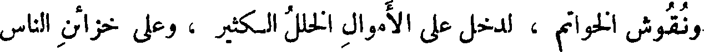
ونقوش الخواتم ، لدخل على الأموال الخلل الكثير ، وعلى خزائن الناس
File: 000301.gt.txt (if the image is defective, simply delete all Arabic text and the line will be excluded)
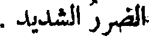
الضرر الشديد .
File: 000302.gt.txt (if the image is defective, simply delete all Arabic text and the line will be excluded)
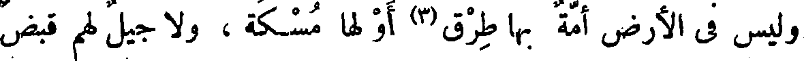
وليس في الأرض أمة بها طرق(3) أو لها مسكة ، ولا جيل لهم قبض
File: 000303.gt.txt (if the image is defective, simply delete all Arabic text and the line will be excluded)
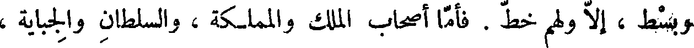
وبسط ، إلا ولهم خط . فأما أصحاب الملك والمملكة ، والسلطان والجباية ،
File: 000304.gt.txt (if the image is defective, simply delete all Arabic text and the line will be excluded)
والديانة والعبادة ، فهناك الكتاب المتقن ، والحساب المحكم ، ولا يخرج
File: 000305.gt.txt (if the image is defective, simply delete all Arabic text and the line will be excluded)
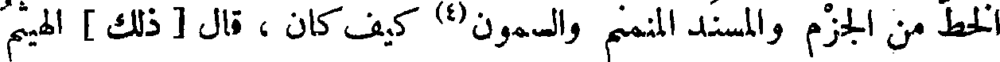
الخط من الجزم والمسند المنمنم والسمون(4) كيف كان ، قال [ ذلك ] الهيثم
File: 000306.gt.txt (if the image is defective, simply delete all Arabic text and the line will be excluded)
[ ابن عدي ]، وآبن الكلبي .
File: 000307.gt.txt (if the image is defective, simply delete all Arabic text and the line will be excluded)
( تخليد الأمم لمآثرها )
File: 000308.gt.txt (if the image is defective, simply delete all Arabic text and the line will be excluded)
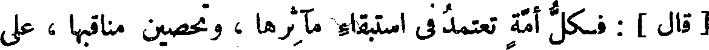
[ قال ] : فكل أمة تعتمد في استبقاء مآثرها ، وتحصين مناقبها ، على
File: 000309.gt.txt (if the image is defective, simply delete all Arabic text and the line will be excluded)
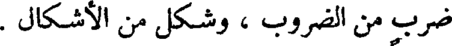
ضرب من الضروب ، وشكل من الأشكال .
File: 000310.gt.txt (if the image is defective, simply delete all Arabic text and the line will be excluded)
( ذوات اللحى والشوارب )
File: 000311.gt.txt (if the image is defective, simply delete all Arabic text and the line will be excluded)
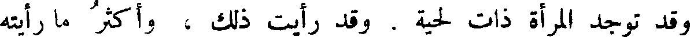
وقد توجد المرأة ذات لحية . وقد رأيت ذلك ، وأكثر ما رأيته
File: 000312.gt.txt (if the image is defective, simply delete all Arabic text and the line will be excluded)
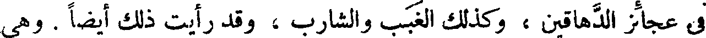
في عجائز الدهاقين ، وكذلك الغبب والشارب ، وقد رأيت ذلك أيضا . وهي
File: 000313.gt.txt (if the image is defective, simply delete all Arabic text and the line will be excluded)
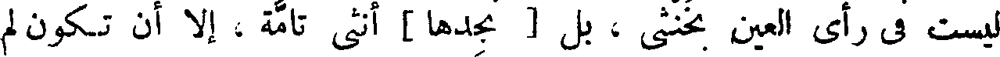
ليست في رأي العين بخنثى ، بل [ نجدها ] أنثى تامة ، إلا أن تكون لم
File: 000314.gt.txt (if the image is defective, simply delete all Arabic text and the line will be excluded)
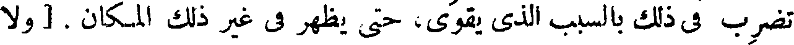
تضرب في ذلك بالسبب الذي يقوى، حتى يظهر في غير ذلك المكان . [ ولا
File: 000315.gt.txt (if the image is defective, simply delete all Arabic text and the line will be excluded)
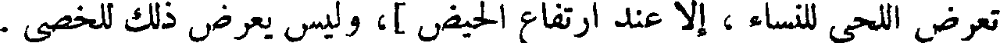
تعرض اللحى للنساء ، إلا عند ارتفاع الحيض ]، وليس يعرض ذلك للخصي .
File: 000316.gt.txt (if the image is defective, simply delete all Arabic text and the line will be excluded)
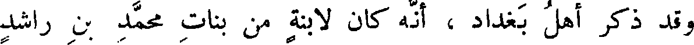
وقد ذكر أهل بغداد ، أنه كان لابنة من بنات محمد بن راشد
File: 000317.gt.txt (if the image is defective, simply delete all Arabic text and the line will be excluded)
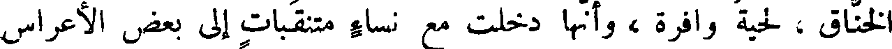
الخناق ، لحية وافرة ، وأنها دخلت مع نساء متنقبات إلى بعض الأعراس
File: 000318.gt.txt (if the image is defective, simply delete all Arabic text and the line will be excluded)
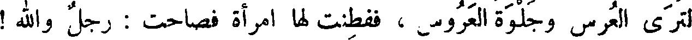
لترى العرس وجلوة العروس ، ففطنت لها امرأة فصاحت : رجل والله !
File: 000319.gt.txt (if the image is defective, simply delete all Arabic text and the line will be excluded)
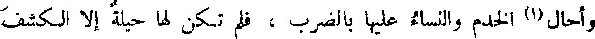
وأحال(1) الخدم والنساء عليها بالضرب ، فلم تكن لها حيلة إلا الكشف
File: 000320.gt.txt (if the image is defective, simply delete all Arabic text and the line will be excluded)
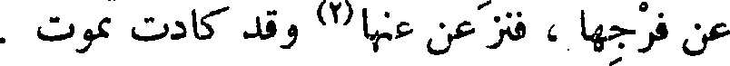
عن فرجها ، فنزعن عنها(2) وقد كادت تموت .
File: 000321.gt.txt (if the image is defective, simply delete all Arabic text and the line will be excluded)
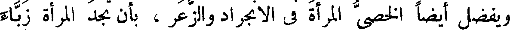
ويفضل أيضا الخصى المرأة في الانجراد والزعر ، بأن تجد المرأة زباء
File: 000322.gt.txt (if the image is defective, simply delete all Arabic text and the line will be excluded)
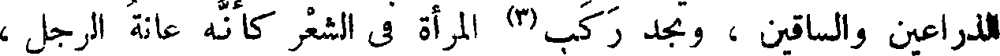
الذراعين والساقين ، وتجد ركب(3) المرأة في الشعر كأنه عانة الرجل،
File: 000323.gt.txt (if the image is defective, simply delete all Arabic text and the line will be excluded)
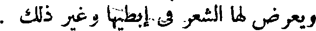
ويعرض لها الشعر في إبطيها وغير ذلك .
File: 000324.gt.txt (if the image is defective, simply delete all Arabic text and the line will be excluded)
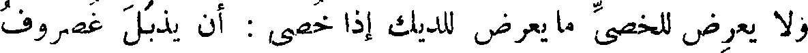
ولا يعرض للخصي ما يعرض للديك إذا خصي : أن يذبل غضروف
File: 000325.gt.txt (if the image is defective, simply delete all Arabic text and the line will be excluded)
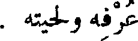
عرفه ولحيته .
File: 000326.gt.txt (if the image is defective, simply delete all Arabic text and the line will be excluded)
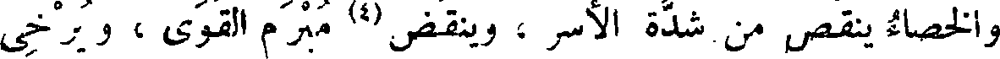
والخصاء ينقص من شدة الأسر ، وينقض(4) مبرم القوى ، ويرخي
File: 000327.gt.txt (if the image is defective, simply delete all Arabic text and the line will be excluded)
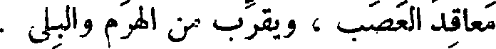
معاقد العصب ، ويقرب من الهرم والبلى .
File: 000328.gt.txt (if the image is defective, simply delete all Arabic text and the line will be excluded)
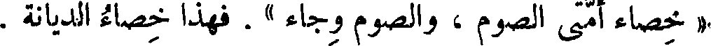
« خصاء أمتي الصوم ، والصوم وجاء » . فهذا خصاء الديانة .
File: 000329.gt.txt (if the image is defective, simply delete all Arabic text and the line will be excluded)
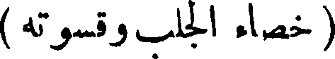
( خصاء الجلب ، قسوته )
To Save: `Ctrl+s`, make sure to choose `Webpage, complete`!